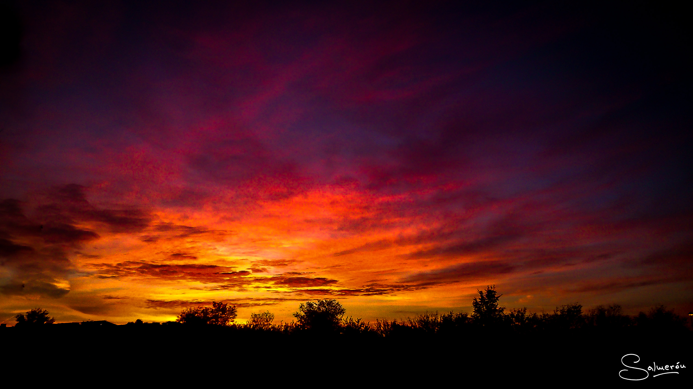

En la tarde que muere con lasciva agonía
entregando su manto para regar las flores
la campiña serena, la amada de un día
rememoró al oído los pasados amores.
Y el crepusculo rojo que a lo lejos moría
en su último rútilo al hundirse en lo arcano
iluminó mi rostro. Yo sentí que vivía
y la besé en la frente, y la besé en la mano.
Y desde aquella tarde tan muda y serena
nuestra vida tornóse como antaño había sido
sin que aquella alegría le nublase la pena,
descorriendo al pasado el velo del olvido.
Es una inmensa hoja de biombo el cielo
y no hay luna en el parque, se ha borrado
el tenaz colorido de mi prado
que hermana su negror al desconsuelo.
En esta noche el musgo es terciopelo
y es tan grande el silencio y tan helado
que los buhos su canto han olvidado
y tienen miedo de lanzarse al vuelo.
El insomnio perdura entre la fiebre,
y quiero que la seda se deshebre
y que del biombo salga la oportuna
claridad, la ilusión del mármol blanco...
Alzo el rostro hacia el sol y veo en su flanco
dibujarse la coma de la luna.
La tarde deslizóse lentamente
como barca en un lago de aguas quietas,
en tu pecho temblaron las violetas
acariciadas por un soplo ardiente.
Allí te murmuré junto a la fuente,
en el parque que guarda ansias secretas,
"Yo soy como el minero que las violetas
de tu cariño ansía reverente..."
Y turbóse la paz de la enramada,
y al decirme muy quedo "¡Yo te adoro!"
se oyó un batir de alas sobre el oro
de tu cabeza tímida y ferviente,
orilló aquella tarde, y de repente
tendió la noche su ala desplegada.
| Row One | Row Two | Row Three |
|---|---|---|
| One | Twoo | Three |
| Four | ||
| Five | Six |
Vamos a ver bien que onda con esta cosa
Seguimos solamente con pruebas
prueba de codigo y más pruebas
"Las noches caen lentamente desde que todo esto empezó,
pareciera que los dioses notan la presencia de la maldad que nos rodea y
por eso nos dejan a la deriva en un mundo donde las sombras son el único
refugio. El miedo cambió desde entonces, las pesadillas se viven en el día,
mientras uno está despierto y la esperanza de que el horror acabe se da durante
el día; el estar encerrados ya no es causa de molestia, estar dentro de casa es
precisamente lo que todos quieren; ya nadie sale por gusto, la muerte se encuentra
en el exterior.""
www es una abreviación común
Prueba de imagen 